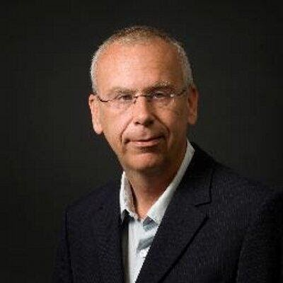

SOOL wetenschappelijk onderzoek in tijden van COVID-19

prof. dr. Wilco Achterberg
Eind februari 2020 begon een bizarre tijd voor alles en iedereen, en dus ook voor de wetenschap op onze afdeling. Data verzameling in verpleeghuizen stopte vrij abrupt, en we gingen plotseling in een dubbele versnelling om te helpen goed om te gaan met dat rotte virus. Helaas ging daardoor de internationale Nursing Home Research Conference (Mei 2020) niet door, en hebben wij dit doorgeschoven naar Mei 2022.
Natuurlijk hadden we de Webinars, die in de eerste maanden een prachtige schakel waren tussen praktijk en wetenschap, en waar naast de verpleeghuiszorg ook de AVG artsen aan meededen. Ook in een crisis zie je dat er mooie dingen gebeuren. Het Wetenschappelijk Leer Onderzoek ging wel gewoon door, en we waren in staat om met de data die onze eigen AIOS verzamelden de impact van de bezoekersregeling op onze patiënten te laten zien.1
Daarnaast hebben wij onderzoeken opgezet naar het crisisbeleid van verpleeghuizen,2 naar de effecten van sociale isolatie op mensen met dementie,3 en een Europese studie naar de effecten van geriatrische revalidatie, de EU-Coger studie.4 We zijn als Leiden ontzettend trots op de deelname van 11 landen in deze studie.
De kennis die we al van eerdere onderzoeken hadden, hebben we gebruikt om een Behandeladvies geriatrische revalidatie Post-COVID-19 te maken met Verenso, en later ook de VRA.5
Tussen al dat Covid-19 geweld ging de gewone wetenschap in de loop van 2020 toch ook weer gewoon door, werden data verzamelingen weer opgestart en werd er hard gewerkt aan het schrijven van mooie artikelen. Een van onze AIOTO’s, Paulien van Dam, maakte ons trots want ze won voor de tweede keer in haar carrière de prestigieuze Jan Stoop prijs, die Verenso jaarlijks uitreikt aan de AIOS (of pas afgestudeerde SO) met het beste wetenschappelijke artikel.6
Het was een apart jaar voor onze AIOS, met veel druk in de praktijk, en de handicap van het elkaar niet kunnen ontmoeten terwijl dat voor de professionele ontwikkeling juist heel belangrijk is. De crisis heeft laten zien welke cruciale rol de wetenschap heeft, voor wie daar nog niet van overtuigd was. Ook merken we dat het net zo belangrijk is dat er goede wetenschap gedaan wordt, en dat we niet te snel conclusies trekken uit matige studies, zoals bijvoorbeeld bij Hydroxychloroquine dreigde te gebeuren. Mensen die weinig geloof hechten aan wetenschap (ongeacht hun politieke voorkeur) volgen de aanbevolen maatregelen ook minder goed op, liet een recente review zien.7 Het artikel liet echter ook zien, dat we als wetenschappers zeker wel effectief kunnen zijn om dat wantrouwen te bestrijden, als we maar aan goede ‘scientific-outreach’ doen: dus communiceren over ons werk.
Gelukkig besteedt onze wetenschappelijke staf juist heel veel aandacht aan het kritische interpreteren van studies, zodat je bij SOOL als AIOS opgeleid wordt tot een aardige, vaardige, maar ook kritische specialist ouderengeneeskunde. Ik ben heel trots op zowel de AIOS, opleiders en staf die dat toch ook 2020 maar weer geflikt hebben!
Wetenschappelijk leeronderzoek (WLO) voor de AIOS en door de AIOS
dr. Wing Tong dr. ir. Jenny van der Steen
Bij SOOL heeft de wetenschap een belangrijke plek toebedeeld gekregen. De huidige richtlijnen kunnen over een korte periode van 2 tot 3 jaar alweer achterhaald zijn. Daartoe zal elke SO de nieuwste wetenschappelijke literatuur moeten (blijven) bestuderen. Een leven lang leren. Hiermee kan de SO dan “up to date” blijven, naast het gebruik van de richtlijnen die gepubliceerd worden, onder andere via Verenso.
WLO
AIOS moeten wetenschappelijk onderzoek doen hetgeen een landelijke eis is. SOOL biedt behalve de wetenschapsavonden (hier worden dan wetenschappelijke artikelen kritisch gerefereerd) en het zelfstandig schrijven van een CAT, de AIOS ook de mogelijkheid om zelf (leer)onderzoek te verrichten. Bij SOOL is dit zelfs een verplicht onderdeel van de opleiding tot specialist ouderengeneeskunde. Door zelf (leer)onderzoek te doen, kan de AIOS ervaren dat er nogal wat komt kijken bij het doen van wetenschappelijk onderzoek; zaken die de betrouwbaarheid en validiteit van de bevindingen kunnen beïnvloeden. Eerder verzamelden AIOS gegevens bij bewoners met diabetes; vanaf 2018 gaat het wetenschappelijk leeronderzoek (WLO) over pijn en onwelbevinden bij bewoners met cognitieve beperkingen.
Evidence-based medicine (EBM)
Elke AIOS verzamelt gegevens over pijn en welbevinden bij vijf van hun bewoners met een cognitieve beperking. In groepjes formuleren zij een onderzoeksvraag, voeren statistische analyses uit en rapporteren over deze resultaten in een artikel. Tenslotte worden deze resultaten ook gepresenteerd voor de collega AIOS om van elkaar te kunnen leren. De empirische cyclus van evidence-based medicine (EBM) wordt hiermee doorlopen.
Coronapandemie
2020 was voor iedereen een bijzonder jaar, ook de WLO groepen van onze AIOS moesten zich aanpassen vanwege de Corona pandemie. De dataverzameling in de oude stijl kon geen doorgang vinden. Hiervoor in de plaats kregen de AIOS een vervangende opdracht, waarbij een reflectieverslag geschreven werd aan de hand van vijf bewoners bij wie zij wel de vragenlijst (“de meetinstrumenten”) afnamen, eventueel samen met de verzorgende / verpleegkundige.
Nieuwe kansen
2020 bracht ook weer nieuwe kansen. De WLO data die rond de eerste bezoekersregeling waren verzameld, bleken ineens extra waardevol. Er kwam namelijk al gauw veel onderzoek naar ervaren impact van de bezoekersregeling, maar meestal achteraf, en niet op bewoner-niveau maar globaal. Uit vergelijken van de twee metingen van de AIOS bleek echter dat agitatie niet toe- maar afnam in het voorjaar van 2020. AIOS lichtten toe dat medewerkers zoals die eerder in de brasserie werkten, ingezet werden bij activiteiten in de middag, en dat sommigen baat hadden bij minder last van bezoek voor anderen in de huiskamer. Dit is in september 2020 gepubliceerd en in oktober 2020 gepresenteerd op de wetenschapsavond door Jenny. Verder vormt het WLO eindproduct van drie AIOS uit de maart 2018 groep de basis voor een wetenschappelijk artikel waar een afkappunt op de nieuwe PAIC15 pijnschaal uit volgt.
Het WLO zelf is ook onderwerp van onderzoek, in de vorm van een onderwijsevaluatie onderzoek, door ons uitgevoerd; voor Wing destijds als keuzestage tijdens de opleiding. De AIOS waardeerden het systematisch observeren van onwelbevinden bij de bewoner, leren om in detail naar met name gezichtsuitdrukkingen en lichaamstaal te kijken. De verzuchting dat die observaties zo subjectief lijken, leidt, hopen wij, tot het inzicht dat gepubliceerd onderzoek in ons veld niet altijd gebaseerd is op keiharde gegevens. Wij hopen dat de observaties zo ook bijdragen aan een kritische houding ten aanzien van ook gepubliceerd onderzoek. Voorts is gekeken naar de attitude en motivatie ten aanzien van het doen van onderzoek in het algemeen door interviews en vragenlijsten onder de AIOS. De resultaten heeft Wing gepresenteerd op congressen (online bij het congres van de Nederlandse Vereniging voor Medisch Onderwijs (NVMO), 19-20 november 2020 en van de European Geriatric Medicine Society (EUGMS), 7-9 oktober 2020). Wordt vervolgd, want we overwegen wijzigingen in het WLO. Ook wordt de vragenlijst herhaald, omdat we heel benieuwd zijn of attitude en motivatie voor onderzoek (die aan het begin van het traject in ieder geval lager was dan van LUMC studenten geneeskunde zoals door Belinda Ommering onderzocht) in de loop van het opleidingstraject verandert.
Tot slot
Dit overzicht van activiteiten op het gebied van het WLO laat zien dat SOOL veel kansen biedt aan de AIOS om de wetenschap en de kennis van de AIOS over onderzoek naar een hoger niveau te tillen. Dit past ook in de visie van SOOL: “we willen de beste specialisten ouderengeneeskunde afleveren”. Zo heeft Wing de kans om onderzoek te doen binnen de Ouderengeneeskunde goed benut, met profijt voor de opleiding.
Samengevat: WLO, voor de AIOS en door de AIOS, met hart en SOOL…!
Wetenschapsavonden ouderengeneeskunde
Maartje Klapwijk, specialist ouderengeneeskunde
Het afgelopen jaar was door de uitbraak van COVID-19 een bijzonder jaar dat op meerdere niveaus voor aanpassingen van invulling werk maar ook van de nascholing zorgde. Waar voorheen elke eerste donderdag van de maand door het opleidingsinstituut specialisme ouderengeneeskunde en PHEG-AGE van het LUMC een nascholing werd georganiseerd kon dit vanaf maart 2021 niet meer fysiek doorgaan en hebben we moeten besluiten om tot en met augustus de bijeenkomsten te annuleren. Juist omdat er tijdens deze nascholingsavonden, die al sinds 2014 plaatsvinden, veel ruimte is voor interactie tussen specialisten ouderengeneeskunde en huisartsen (en zij die daarvoor in opleiding zijn) en leden van het Universitair Netwerk voor de Care sector Zuid-Holland (UNC-ZH) en dit nu niet mogelijk was om bij elkaar te komen. Per september 2020 is er voor gekozen om de bijeenkomsten voort te zetten door middel van een online bijeenkomst die alleen gevolgd kon worden na aanmelding via het secretariaat van het Specialisme Ouderengeneeskunde Opleiding Leiden (SOOL).
Opening; Opleiding en UNC-ZH
De eerste donderdag is ook de ‘terugkomdag’ van perifere opleiders, zodat meteen
hierna om 17.00 uur gestart kan worden met mededelingen vanuit het opleidingsinstituut en vanuit het UNC-ZH.
Voordrachten
Naar aanleiding van vier tot vijf plenaire voordrachten van elk twintig minuten met tien minuten om met elkaar in discussie te gaan en kennis te delen en over verschillende actuele
ouderengeneeskundige onderwerpen. Hierbij wordt ook toepassing van het onderwerp van de voordracht in de dagelijkse praktijk besproken. Van de vijf plenaire voordrachten, worden er in principe drie verzorgd door aios ouderengeneeskunde en twee door medisch specialisten uit binnen- en buitenland. Alle voordrachten zijn nadrukkelijk gericht op de toepasbaarheid in de praktijk en Evidence Based Medicine.
De gebruikelijke onderbreking met een broodjesbuffet en na afloop een (netwerk)borrel is uiteraard bij de online bijeenkomsten vervallen.
Onderwerpen
De opkomst op deze avonden was erg goed, steeds rond de 50 deelnemers. Een aantal onderwerpen die besproken zijn in 2020 waren:
-Wet Zorg en Dwang
-Gevolgen nieuwe donor wet voor het verpleeghuis
-COVID-19, de huidige stand van zaken
-Palliatieve zorg en de gevolgen van de COVID-19 pandemie in het verpleeghuis
-Statines
-Advance Care Planning
-Otoscopie bij ouderen
-Prolaps bij ouderen
Accreditatiepunten
De wetenschapsavond bleek weer een uitermate geschikt platform voor het uitwisselen van recente en wetenswaardige wetenschappelijke kennis binnen de ouderengeneeskunde, het communiceren van nieuws uit het UCN-ZH, het versterken van de banden met opleiders, specialisten ouderengeneeskunde en huisartsen in de regio. Deze wetenschapsavonden per jaar zijn voor elke bijeenkomst voor drie uur (online voor twee uur) geaccrediteerd voor huisartsen en specialisten ouderengeneeskunde en aan deelname zijn geen kosten verbonden. Wel is het vriendelijke verzoek om het evaluatie formulier in te vullen en naar het secretariaat te mailen na afloop van de wetenschapsvond
Aanmelden
In verband met de accreditatie is aanmelden essentieel, inschrijven is ook in 2021 weer mogelijk via het secretariaat van de opleiding specialisme ouderengeneeskunde: sool@lumc.nl.
Indien u het op prijs stelt uitnodigingen voor de wetenschapsavond te ontvangen, kunt zich hiervoor eveneens aanmelden via sool@lumc.nl.